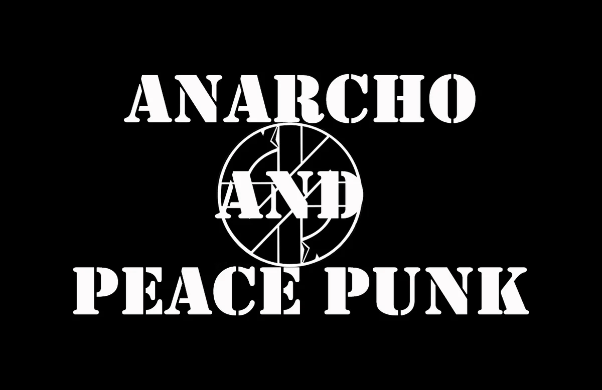

Que es Un Movimiento Musical?
Un Movimiento Musical es cuando una ciudad o grupo de personas deciden formar un movimiento de musica basado en un genero pero con ese grupo de personas o ciudad dandole su propio estilo unico, por ejemplo vease el Straight Edge en Washington, el Rock Radical Vasco en España o el Chiki Punk en Peru
Movimientos En El Mundo
Como ya he dicho un Movimiento es cuando un grupo de personas crean una vertiente o nuevo estilo musical a partir de otro, ahora pondre unos ejemplos

Rock Radical Vasco

Anarcho Punk

Straight Edge